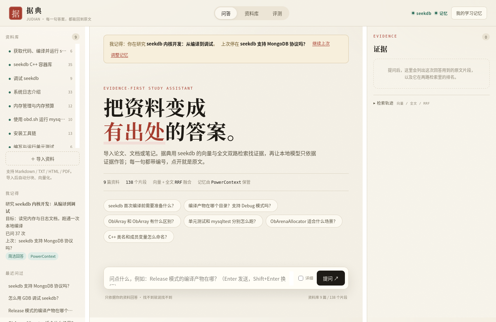
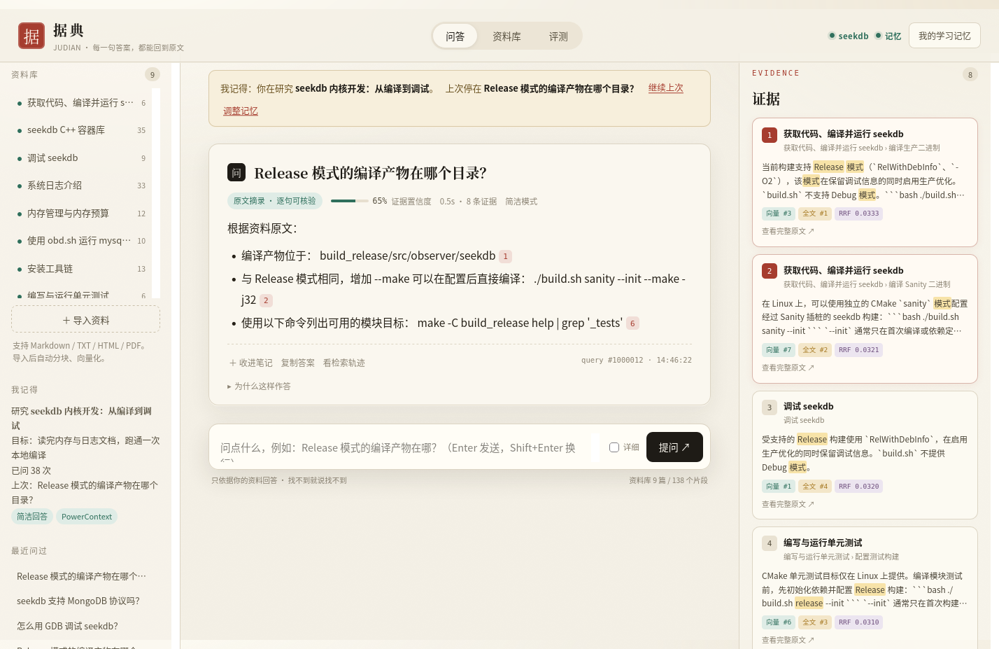
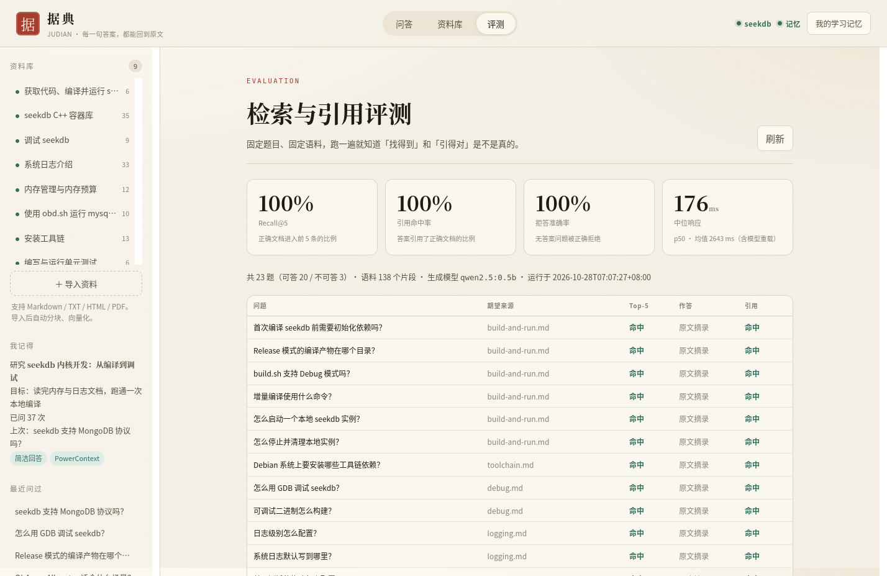
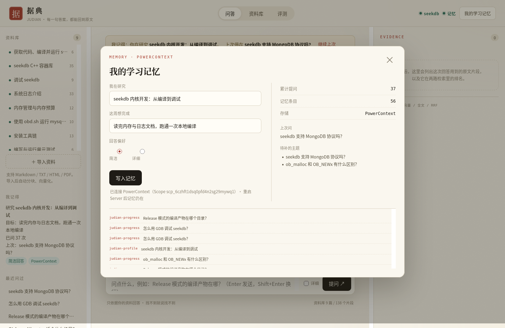
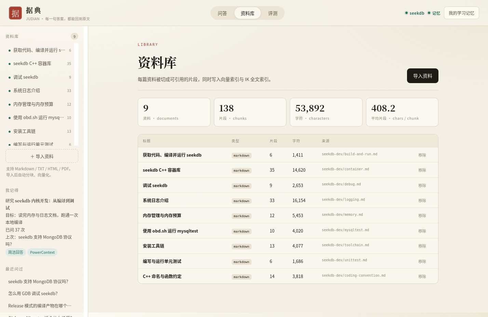

EVIDENCE-FIRST STUDY ASSISTANT
把资料变成
有出处的答案。
据典把论文、文档和笔记导入 seekdb，用向量与全文双路检索找证据， 再让本地模型只依据证据作答。每一句都带编号，点开就是原文；找不到就说找不到。

WHY
不是又一个聊天框
通用助手答得顺，但你不该拿无法核对的答案去做研究。据典把「找到原文」放在「生成」前面。
两路召回，互补短板
向量擅长语义相近，全文擅长命令、路径、错误码。seekdb 在同一张表里同时建 HNSW 与 IK 索引， 两路各取 Top-30，用 RRF 融合。
cosine_distance + MATCH AGAINST没有引用，就不采用
模型输出必须带合法的 [n]；越界编号会被删除，一个都没有就退回原文摘录。 证据不足时明确拒答，而不是编一个像样的答案。
CITATION GUARD记住人和进度
研究主题、回答偏好、上次问题、薄弱主题写入 PowerContext； 换一个进程、重启 Server，打开页面仍然记得。
POWERCONTEXT MEMORYDEMO
一次提问，三样东西
答案、证据、检索轨迹同时给出。评审可以沿着 [n] 一路点到原文，也可以展开看两路排名。




HOW IT WORKS
一次回答的四个动作
没有黑盒：每一步都能在响应 JSON、SQL 或日志里找到对应记录。
向量化
问题经本地 qwen3-embedding 变成 1024 维向量。
双路召回
seekdb 同时走 HNSW 近邻与 IK 全文，各取 30 条。
RRF 融合
1/(60+rank) 相加，取前 8 条作为证据。
校验引用
逐句标注 [n]；无合法引用则原文摘录，证据不足则拒答。
四张表，一个库
- documents：资料元信息、来源、页数、字符数
- chunks：
VECTOR(1024)+ HNSW、FULLTEXT ... IK、标题路径、页码 - queries：问答日志，引用以 JSON 保存
- notes：收藏的问答与引用快照
一个学习者，一个 Scope
- judian-profile：研究主题、本周目标、回答详略
- judian-progress：提问数、上次问题、引用文档、薄弱主题
- 显式写入、按 kind 读取，Server 重启后仍在
- 离线自动降级到本地 JSON，不阻塞问答
EVAL
用固定题集说话
9 篇 seekdb 官方开发者文档、20 道可答题 + 3 道资料外问题。指标由 scripts/eval.py 生成，逐题可查。
评测环境：4 核 / 9.7 GB / 无 GPU；向量 qwen3-embedding:0.6b；生成 qwen2.5:0.5b。原始结果见仓库 docs/evidence/eval.json。
QUICK START
三步，在自己的机器上跑
需要 seekdb 1.4（2881）、Ollama 与 Python 3.10+。首次灌库要过一遍 CPU 向量模型，约 8–20 分钟，之后有缓存。
# 1. 依赖 + 建库 + 灌入示例语料 cd qoder ./scripts/setup.sh # 2. 启动 PowerContext（记忆） ./scripts/pc_server.sh start # 3. 启动 Web ./scripts/run.sh → http://127.0.0.1:8766